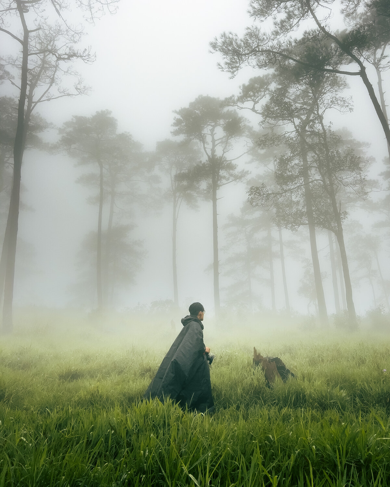
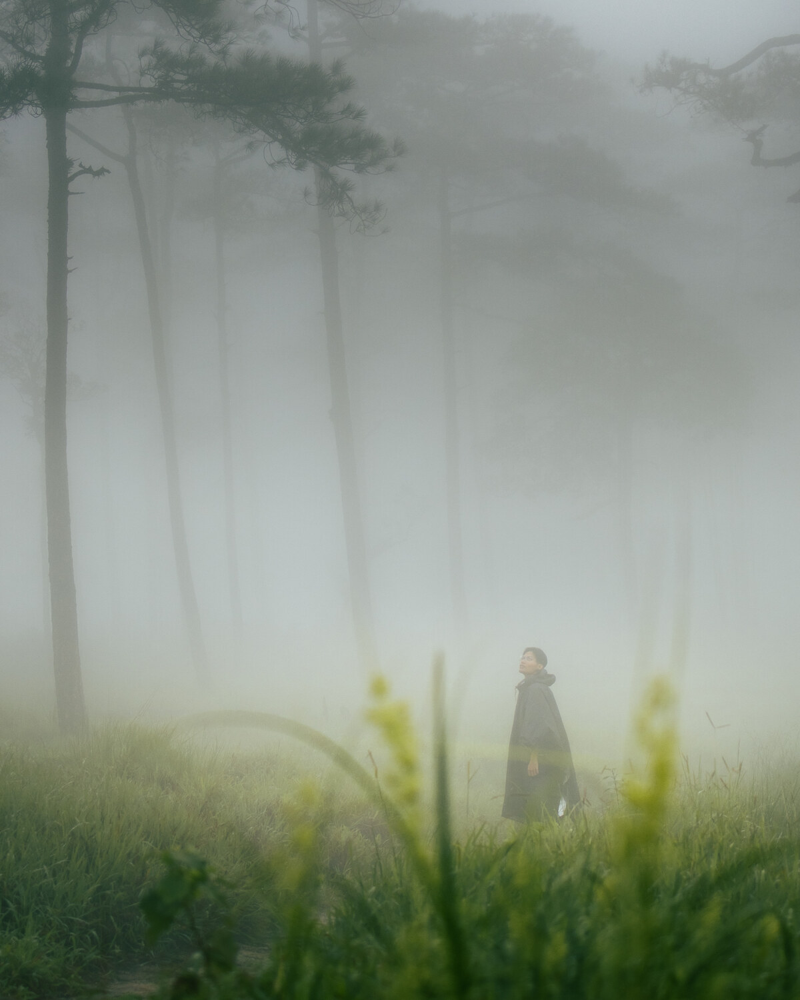

เกี่ยวกับAbout Me




ผม นายธรรพ์ณธร พันธ์มุง เกิดเมื่อปี พ.ศ. 2544 ปัจจุบันอายุ 25 ปี สำเร็จการศึกษาระดับปริญญาตรี วิทยาศาสตรบัณฑิต (วนศาสตร์) สาขาวิทยาศาสตร์ชีวภาพป่าไม้ จากมหาวิทยาลัยเกษตรศาสตร์ ในปี พ.ศ. 2567 ประสบการณ์การทำงานของผมส่วนใหญ่เกี่ยวข้องกับการสำรวจทรัพยากรป่าไม้ การจัดเก็บและวิเคราะห์ข้อมูลภาคสนาม รวมถึงการประยุกต์ใช้เทคโนโลยีสารสนเทศภูมิศาสตร์ (GIS) ไม่ว่าจะเป็นการสำรวจป่าไม้ การจำแนกชนิดพันธุ์นก หรือการประเมินความหลากหลายทางชีวภาพ ผมเชื่อว่าการผสานองค์ความรู้ทางวิทยาศาสตร์เข้ากับเทคโนโลยีสมัยใหม่ จะช่วยเพิ่มประสิทธิภาพในการทำงาน ลดผลกระทบต่อธรรมชาติ และนำไปสู่การจัดการทรัพยากรธรรมชาติอย่างยั่งยืน
My name is Thunnatorn Phunmung. I was born in 2001 and am currently 25 years old. I graduated with a Bachelor of Science in Forestry (Forest Biology) from Kasetsart University in 2024. My professional experience primarily involves forest resource surveys, field data collection and analysis, as well as the application of Geographic Information Systems (GIS). Whether conducting forest surveys, identifying bird species, or assessing biodiversity, I believe that integrating scientific knowledge with modern technology can improve work efficiency, reduce impacts on nature, and lead to sustainable natural resource management.